Guida a CSE_SISTEM
Documentazione del Coordinatore per la sicurezza in fase di esecuzione (D.Lgs 81/2008), su PC Windows e telefono Android. Versione di prova 0.5.
- Scaricare e installare
- Cartella dei dati e Google Drive
- La finestra in breve
- Nuovo cantiere e anagrafica
- Progetto, PSC e notifica
- Imprese, POS e verifica di idoneità
- Giornale dei lavori
- Registro fotografico
- Verbali di sopralluogo
- Stampa e PDF
- Dove stanno i file
- Problemi frequenti
1. Scaricare e installare
Tutti i file sono nella pagina della versione su GitHub, sotto Assets:
| File | Per | Note |
|---|---|---|
CSE_SISTEM-0.5.0-portable.exe | Windows 10/11 | si avvia con un doppio clic, senza installazione (comodo per provarlo) |
CSE_SISTEM-0.5.0-setup.exe | Windows 10/11 | installa il programma con l'icona nel menu Start e sul desktop |
CSE_SISTEM.apk | Android | da scaricare e installare direttamente sul telefono |
Guida_CSE_SISTEM.pdf | tutti | questa guida |
Windows
- Scarica
CSE_SISTEM-0.5.0-portable.exe(oppure ilsetup.exe). - Fai doppio clic. Il programma non è ancora firmato digitalmente, quindi Windows può mostrare «Windows ha protetto il PC»: clicca Ulteriori informazioni e poi Esegui comunque. Succede solo la prima volta.
- Al primo avvio i cantieri vanno in
Documenti\CSE_SISTEM. Per usare Google Drive vai subito in Impostazioni (capitolo 2).
Android
- Apri dal telefono la pagina della versione e tocca
CSE_SISTEM.apkper scaricarlo. - Apri il file scaricato (dalla notifica o da File › Download). Android chiede di consentire l'installazione di app da questa fonte: tocca Impostazioni, attiva Consenti da questa fonte, torna indietro e tocca Installa.
- Se compare Play Protect («app non riconosciuta»), tocca Altri dettagli › Installa comunque: è normale per le app che non vengono dal Play Store.
- Apri CSE_SISTEM e consenti l'uso della fotocamera quando lo chiede (serve per le foto).
- Vai in Impostazioni (rotella in alto a destra) e tocca Concedi il permesso: si apre la pagina di Android dove attivare Accesso a tutti i file per CSE_SISTEM. Serve per vedere i cantieri portati da Google Drive.
2. Cartella dei dati e Google Drive
Ogni cantiere è una cartella dentro CSE_SISTEM. Mettendo questa cartella su Google Drive, PC e telefono lavorano sugli stessi cantieri.
Sul PC (Google Drive per desktop)
- Installa Google Drive per desktop (se non c'è già) e accedi con l'account aziendale: compare un disco, di solito
G:\Il mio Drive. - In CSE_SISTEM apri Impostazioni: il programma trova da solo le cartelle di Drive. Clicca Usa questa.
- Da quel momento i cantieri stanno in
G:\Il mio Drive\CSE_SISTEMe Drive li sincronizza.
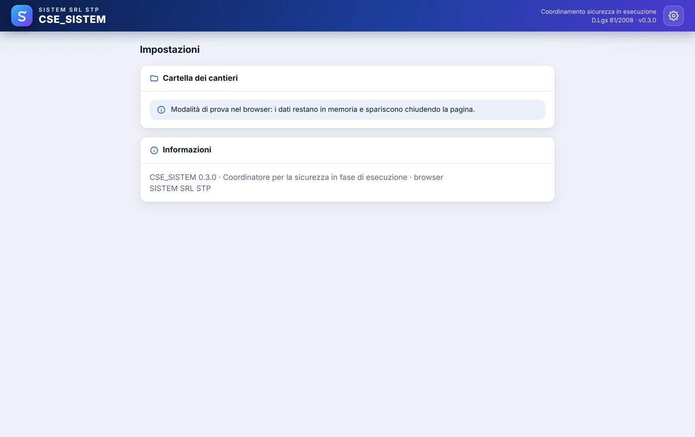
Sul telefono (app di sincronizzazione)
L'app Google Drive di Android non crea una cartella sincronizzata sul telefono, quindi serve un'app che lo faccia. Consigliata: Autosync per Google Drive (MetaCtrl) oppure FolderSync.
- Apri CSE_SISTEM almeno una volta: crea la cartella
Documenti/CSE_SISTEM. - Installa Autosync dal Play Store e accedi con lo stesso account Google del PC.
- Crea una coppia di cartelle: sul telefono
Documenti/CSE_SISTEM, su DriveIl mio Drive/CSE_SISTEM, sincronizzazione in due direzioni. - Controlla che CSE_SISTEM abbia Accesso a tutti i file (Impostazioni del programma).
3. La finestra in breve
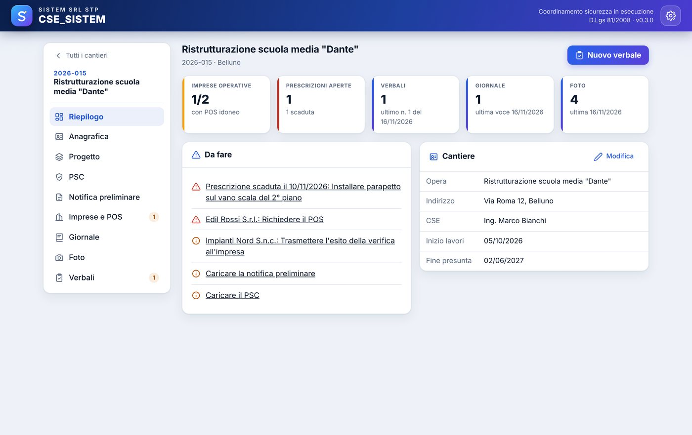
- Barra in alto: il marchio riporta all'elenco dei cantieri; la rotella apre le Impostazioni.
- Menu a sinistra: le funzioni del cantiere. Il numero arancione indica cose da sistemare (imprese senza POS idoneo, prescrizioni aperte).
- Riepilogo: indicatori (imprese operative, prescrizioni aperte o scadute, verbali, giornale, foto) e l'elenco Da fare; ogni riga porta alla pagina dove sistemarla.
- I pulsanti in blu/viola sono l'azione principale della pagina. Nei moduli lunghi la barra con Salva resta sempre in basso.
- Il tema scuro si attiva da solo se Windows o il telefono sono in modalità scura.
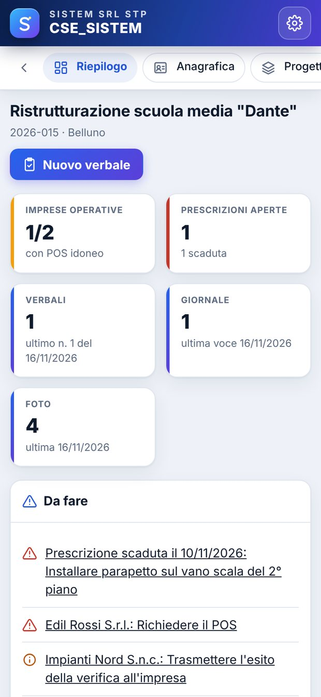
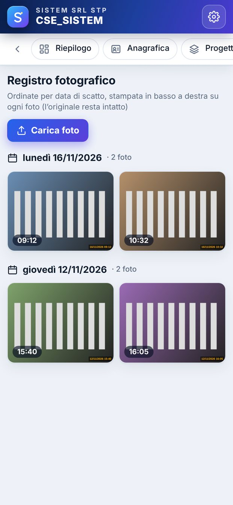
4. Nuovo cantiere e anagrafica
- Nell'elenco dei cantieri clicca Nuovo cantiere.
- Scrivi il codice (es.
2026-015): diventa il nome della cartella e non si cambia più. Poi denominazione, comune e indirizzo. - Si apre l'Anagrafica: completa i dati della notifica preliminare (Allegato XII), divisi in gruppi: l'opera; i soggetti (committenti, responsabile dei lavori, CSP, CSE, direttore dei lavori, ognuno con recapiti, PEC e codice fiscale); notifica, tempi e importi. Premi Salva.
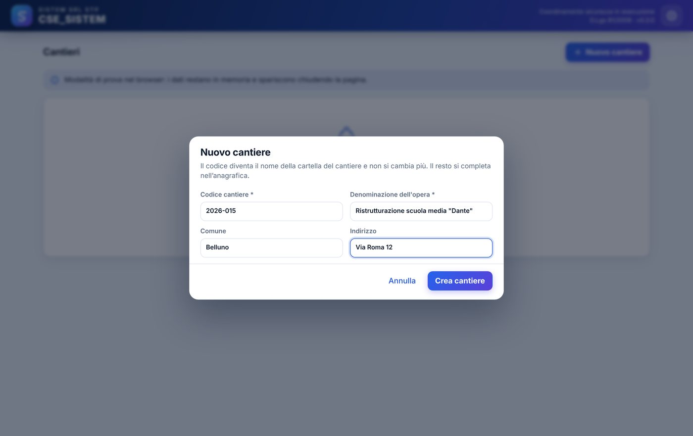
Il nome del CSE e il comune compaiono nei verbali stampati: compilali prima del primo sopralluogo. Lo stato del cantiere (in corso, sospeso, concluso) si cambia nel gruppo «L'opera».
5. Progetto, PSC e notifica
Nelle tre pagine si caricano i documenti: Carica documenti, scegli uno o più file, poi per ognuno indica titolo, revisione, data e autore. Il file viene copiato nella cartella del cantiere (l'originale resta dov'è); le revisioni precedenti restano in elenco. Clicca una riga per aprire il documento con il programma del PC o del telefono.
6. Imprese, POS e verifica di idoneità
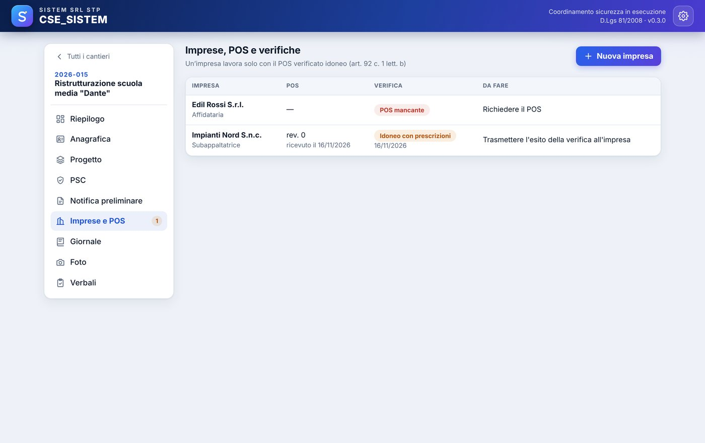
- Nuova impresa: ragione sociale, impresa o lavoratore autonomo, ruolo (affidataria, esecutrice, subappaltatrice) e, per i subappalti, l'impresa affidataria.
- Nella scheda dell'impresa completa i dati (sede, PEC, e-mail, datore di lavoro, direttore tecnico, capocantiere, RSPP, medico competente, RLS, lavorazioni, date di ingresso e uscita). Sede, PEC ed e-mail finiscono nei destinatari della lettera.
- Carica POS: scegli il file del POS, oppure tutti gli elaborati di cui è composto (relazione, schede delle fasi, planimetrie, ...), e indica revisione, data e data di ricezione. Si apre subito la finestra Documenti della revisione per aggiungere gli allegati.
- Nella finestra Documenti (pulsante nella colonna «Documenti» della revisione):
- Aggiungi elaborati: altri file del POS;
- Aggiungi file: allegati, anche molti insieme (attestati, idoneità sanitarie, DURC, visura, DVR, dichiarazioni), con la data di ricezione;
- Aggiungi cartella (su PC): copia una cartella intera così come l'ha mandata l'impresa, con le sue sottocartelle; gli allegati restano raggruppati per cartella;
- l'icona della cartella apre in Esplora risorse le cartelle
POS rev NeAllegati rev N: i file che copi lì a mano (anche da Google Drive) compaiono da soli, con «nella cartella» al posto della data. Aggiorna rilegge le cartelle.
- Quando l'impresa manda un aggiornamento: se è un POS nuovo usa Nuova revisione; se manda solo documenti aggiungili nei Documenti della revisione. Le revisioni vecchie restano in elenco come «superata».
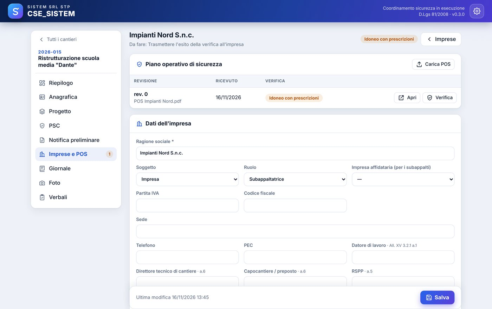
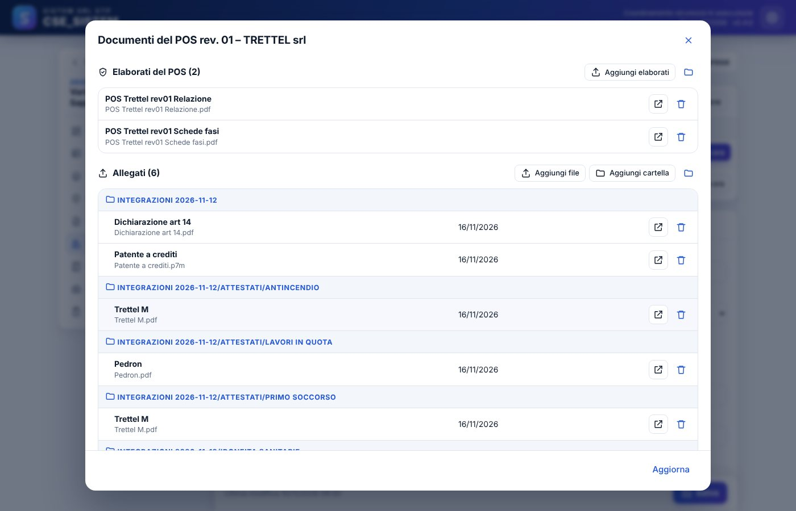
La check list
Verifica ora apre la check list SISTEM, la stessa del modello cartaceo: A contenuti minimi del POS (Allegato XV 3.2.1), B idoneità tecnico-professionale (Allegato XVII), C ulteriori adempimenti (Titolo IV). Per ogni voce scegli Sì, No o Non previsto e scrivi la nota che verrà stampata sotto la voce (es. «Regolare, scadenza 11/02/2027.»).
- Le voci 26-28 riguardano l'impresa affidataria: per le altre sono già «Non previsto».
- Con l'occhio barrato a destra di una voce la nascondi: non compare nella stampa e non conta per l'esito. «Mostra nascoste» le fa rivedere per rimetterle.
- Il programma propone l'esito (un «No» nella sezione A = non idoneo; un «No» nelle sezioni B e C o delle integrazioni = idoneo con prescrizioni) e l'idoneità tecnico-professionale. Puoi cambiarli.
- Le integrazioni richieste (titolo e testo) vanno nell'allegato della check list e nella lettera. «Proponi dalle voci «No»» le crea dalle voci mancanti. Nel testo, le righe che iniziano con «- » diventano un elenco puntato.
- Per una revisione nuova la verifica riparte da quella della revisione precedente: si aggiorna solo quello che è cambiato.
Verifica con Claude (su PC)
Verifica con Claude fa leggere a Claude tutti gli elaborati del POS, i suoi allegati (anche quelli delle revisioni precedenti, cartelle comprese) e il PSC del cantiere. Prima scegli quali documenti mandare (Tutti / Nessuno, oppure uno per uno; i file in formati che Claude non legge sono segnalati e non si possono scegliere); dopo qualche minuto la check list è compilata voce per voce con le note, l'esito, le integrazioni con le condizioni operative e i testi della lettera.
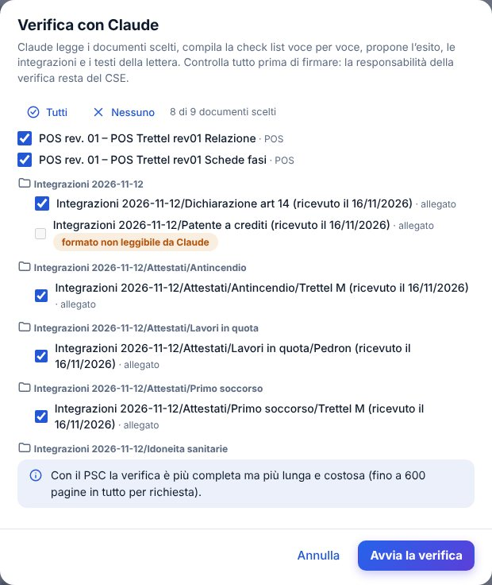
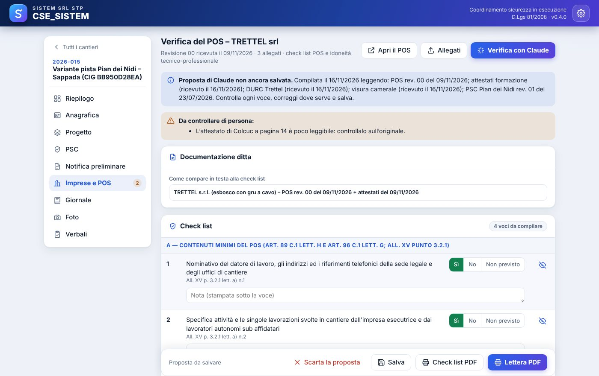
- Documenti accettati: PDF e immagini (JPG, PNG). Un file firmato
.p7mva prima aperto e salvato in PDF. - Limite: circa 600 pagine in tutto per verifica. Con un PSC molto lungo togli la spunta al PSC.
- I documenti già mandati non si rimandano: una seconda verifica dello stesso POS è più veloce.
- Serve la chiave API di Claude, da inserire una volta in Impostazioni (vedi sotto). Sul telefono la verifica con Claude non c'è: la check list si compila a mano.
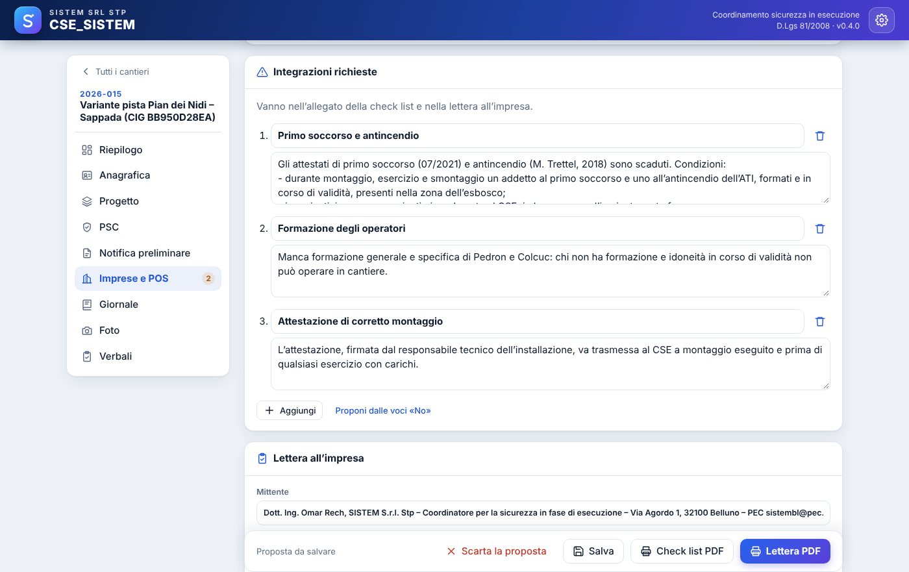
Check list e lettera in PDF
- Check list PDF: destinatari in alto a destra, «Lavori di» e CSE ripetuti su ogni pagina, le voci con le X nelle colonne SI / NO / NON PREVISTO e le note, l'esito con «no perché» e «da integrare», data e firma; in fondo l'Allegato – integrazioni ancora mancanti.
- Lettera PDF: «Richiesta integrazioni POS» (o «Esito della verifica del POS» se non ce ne sono) con mittente, destinatari, per conoscenza, oggetto, esito, aspetti adeguati, integrazioni, termini e firma. I campi della lettera si correggono nella scheda Lettera all'impresa.
- I PDF vanno in
05_Verifiche_POS. Quando trasmetti l'esito, scrivi la data in «Esito trasmesso all'impresa il».
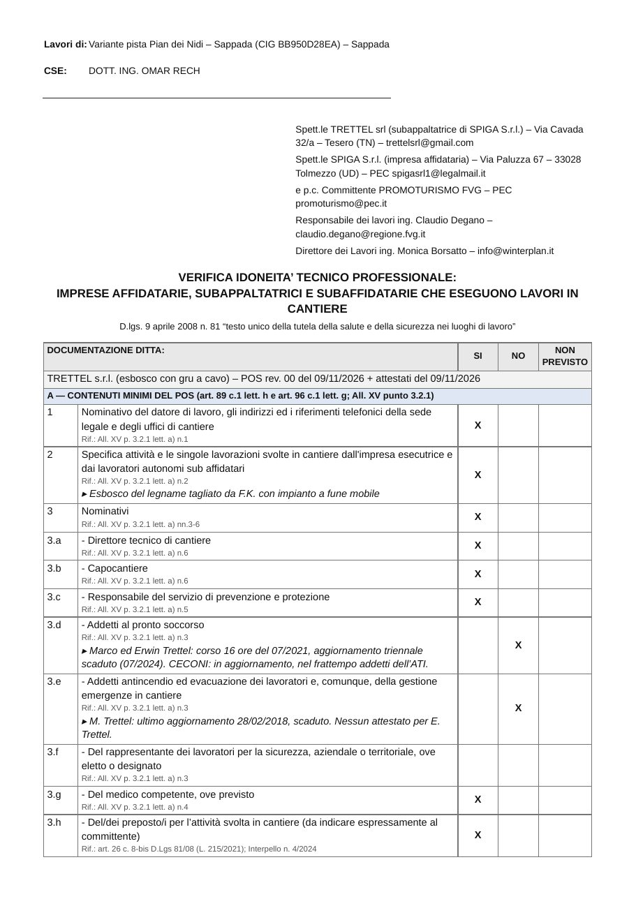
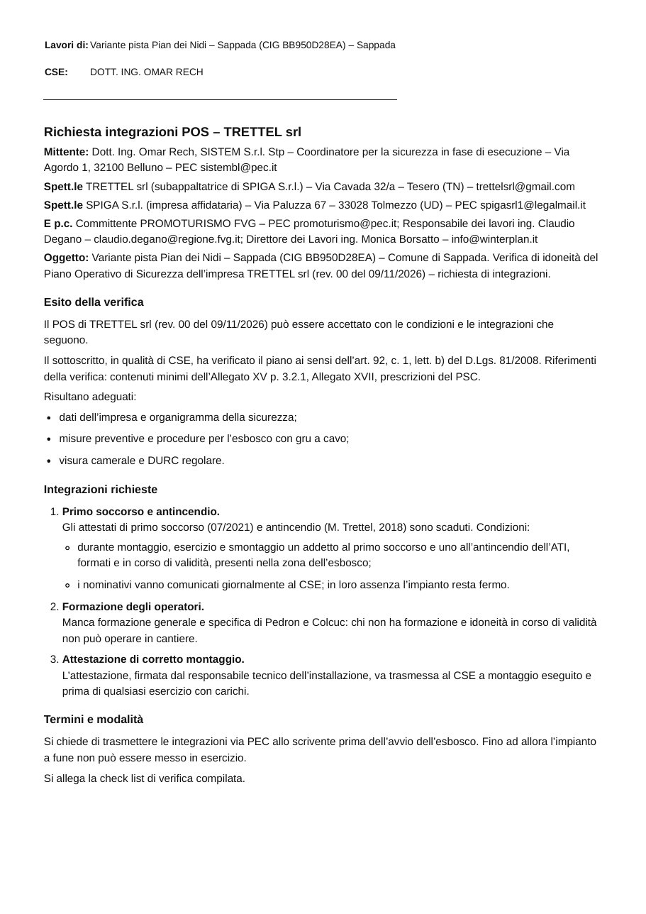
Finché il POS non è idoneo l'impresa compare in rosso e il riepilogo ricorda cosa fare (richiedere il POS, verificarlo, chiederne la revisione, trasmettere l'esito).
Impostare Claude
- Su console.anthropic.com entra con l'account dello studio, carica il credito e crea una chiave in API keys (inizia con
sk-ant-). - In CSE_SISTEM apri Impostazioni (l'ingranaggio in alto a destra), incolla la chiave in Claude: verifica dei POS e premi Salva la chiave: il programma prova subito il collegamento.
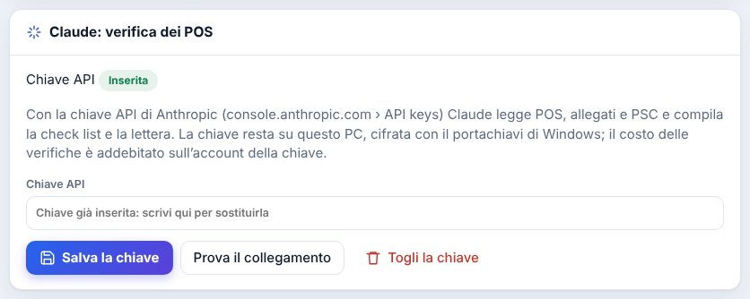
7. Giornale dei lavori
Voce di oggi apre la scheda del giorno: orari di arrivo e partenza, meteo, lavorazioni in corso, osservazioni, disposizioni impartite. C'è una voce per giorno; tocca una voce per modificarla. Se quel giorno sono state fatte foto, la voce lo indica con un collegamento.
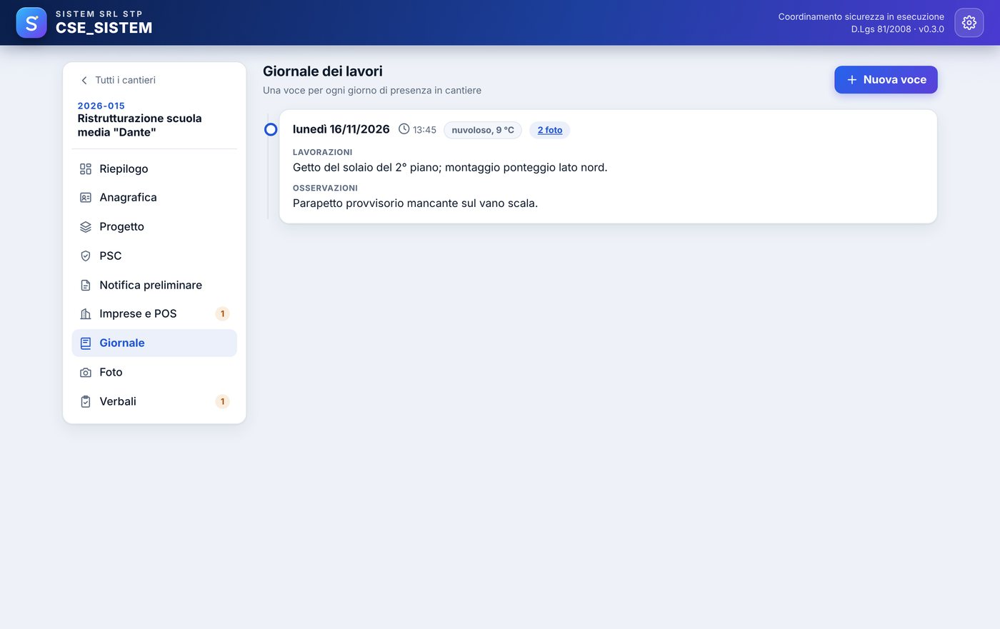
8. Registro fotografico
- Sul telefono: Scatta foto (la foto resta anche nella galleria) oppure Carica foto dalla galleria. Sul PC: Carica foto (file JPEG).
- La data di scatto si legge dalla foto stessa (dati EXIF). Le foto sono ordinate per data di scatto e raggruppate per giorno, anche se caricate in un altro momento.
- Su ogni foto la data e l'ora di scatto vengono stampate in basso a destra. L'originale resta intatto in
originali; la copia con la data è intimbrate. - Una foto senza data di scatto (per esempio inviata con WhatsApp) prende la data del file e viene segnata con !: verificala.
- Tocca una foto per vederla in grande e aggiungere didascalia e posizione in cantiere. Con Nascondi la data di scatto nel registro e nei verbali si usa la foto senza la data stampata (la data resta nei dati della foto, per l'ordinamento); queste foto hanno il simbolo dell'occhio barrato.
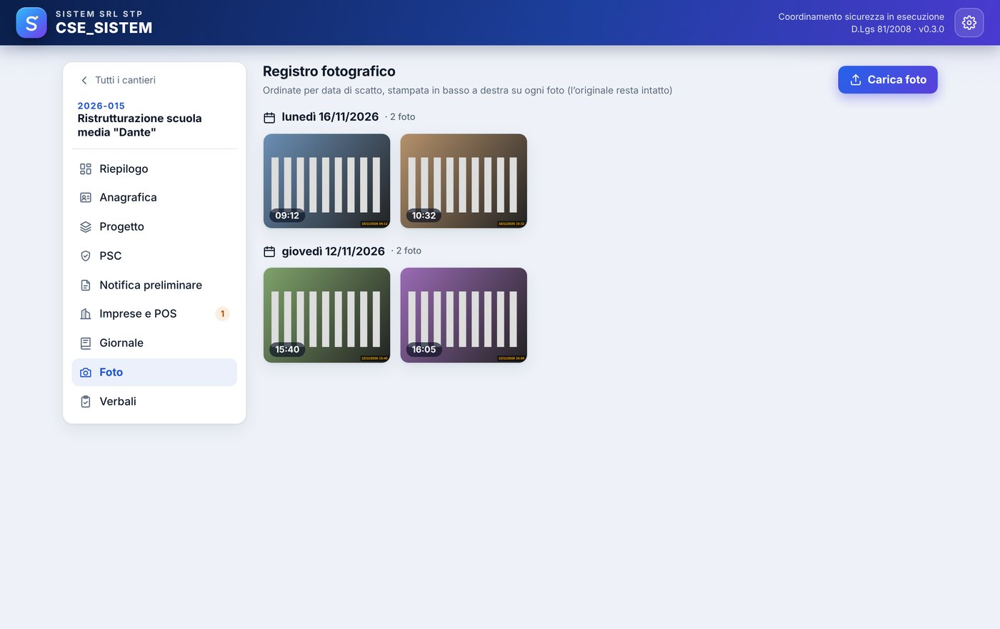
9. Verbali di sopralluogo
- Nuovo verbale (dalla pagina Verbali o dal Riepilogo). Il verbale è già precompilato: numero progressivo, ora di inizio, imprese con POS idoneo, elenco dei controlli e prescrizioni dei verbali precedenti ancora aperte.
- Sopralluogo: data, orari, lavorazioni in corso, imprese presenti (quelle senza POS idoneo sono segnalate).
- Presenti: nome, qualifica e impresa di chi partecipa. Se non li scrivi, nella stampa restano righe vuote da compilare a mano in cantiere.
- Prescrizioni dei verbali precedenti: per ognuna scegli Risolta o Non risolta. Quelle risolte spariscono dalle prescrizioni aperte.
- Verifiche effettuate: per ogni controllo, divisi per gruppo, scegli Conforme, Non conforme o Non verificato, con note.
- Non conformità e Prescrizioni (con impresa e scadenza «entro il»). Le prescrizioni scadute compaiono in rosso nel riepilogo.
- Provvedimenti: sospensione delle singole lavorazioni (art. 92 c. 1 lett. f) e segnalazione al committente o al responsabile dei lavori (art. 92 c. 1 lett. e).
- Foto del verbale: Dal registro fa scegliere le foto già scattate (quelle del giorno del verbale sono in cima: tocca per scegliere, tocca di nuovo per togliere); Scatta (telefono) o Carica aggiungono foto nuove, che vanno anche nel registro fotografico. Sotto ogni foto scrivi la didascalia e scegli se lasciare la data di scatto stampata sulla foto: togliendo la spunta si usa la foto senza data e la data sparisce anche dalla didascalia del PDF. La × toglie la foto dal verbale ma non dal registro.
Nascondere i controlli che non servono
Nelle Verifiche effettuate l'occhio barrato accanto a un controllo lo nasconde: non compare nel verbale stampato (per esempio i ponteggi in un cantiere che non li ha). «Mostra nascosti» li fa rivedere. Il verbale successivo li tiene già nascosti.
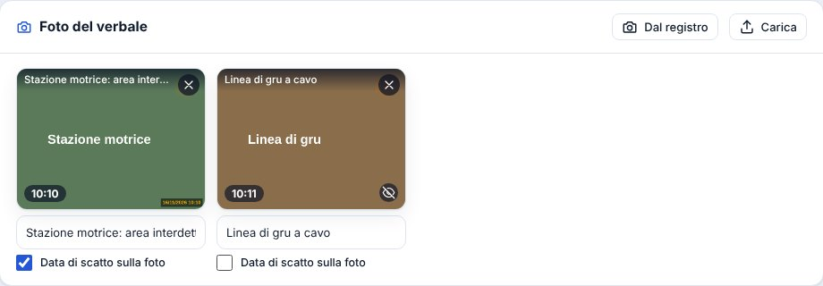
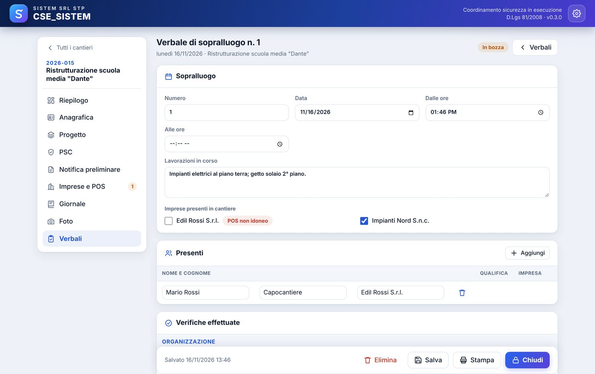
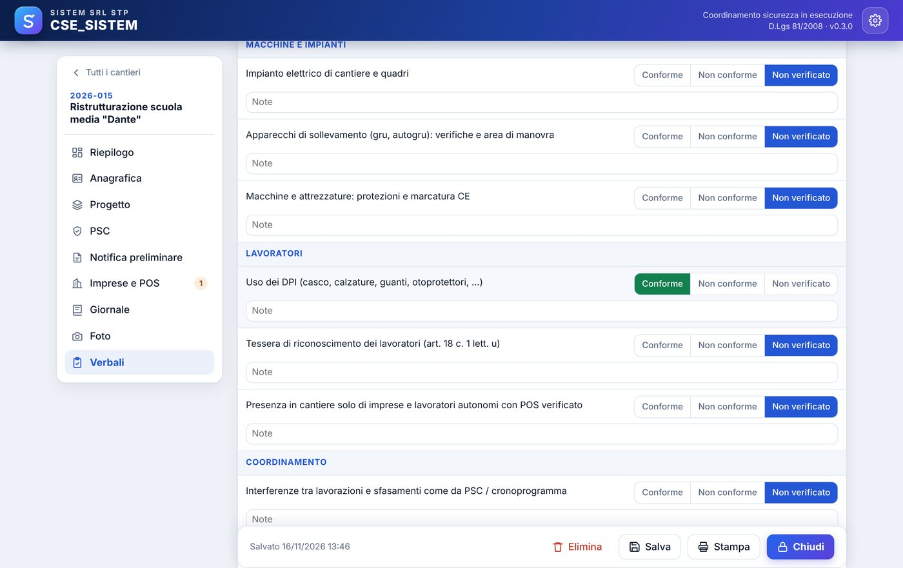
Salvare, stampare, chiudere
| Pulsante | Cosa fa |
|---|---|
| Salva | salva il verbale in bozza; si può riprendere e modificare |
| Stampa | salva e prepara la stampa (vedi capitolo 10), per esempio per una bozza |
| Chiudi | salva, prepara la stampa da firmare e blocca il verbale: non si modifica più, per correzioni si fa un nuovo verbale |
| Elimina | (solo su PC, solo per le bozze) cancella il verbale |
Il verbale stampato termina con «Letto, confermato e sottoscritto», la data e il comune, una riga di firma per ogni presente e la firma del CSE. Si firma su carta. Dopo le firme c'è la documentazione fotografica: due foto per riga, con numero, data e ora di scatto e didascalia.
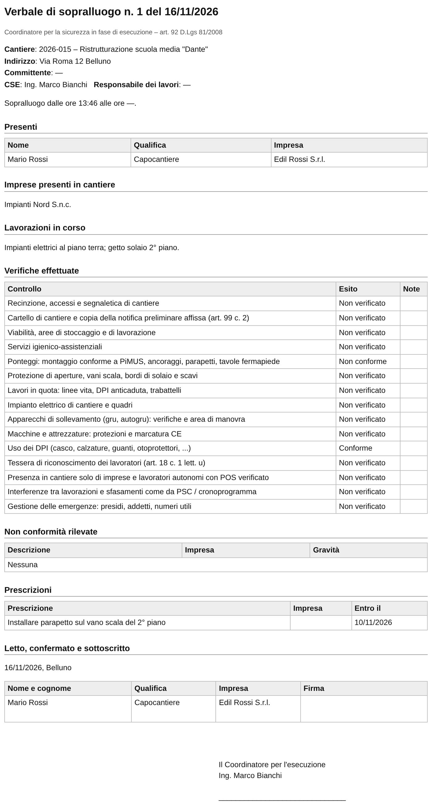
10. Stampa e PDF
Windows
Verbali e verifiche dei POS vengono salvati come PDF nella cartella del cantiere (08_Verbali_sopralluogo, 05_Verifiche_POS) e aperti subito con il lettore PDF: da lì si stampa con Ctrl+P.
Android
Si apre la finestra di stampa del telefono, con l'anteprima del documento:
- per stampare: in alto scegli la stampante (stampanti Wi-Fi o il servizio di stampa installato, per esempio HP, Canon, Epson o Mopria) e tocca il pulsante di stampa;
- per avere il PDF: in alto scegli Salva come PDF, tocca il pulsante PDF e scegli la cartella. Per averlo anche su Drive salvalo in
Documenti/CSE_SISTEM/<cantiere>/08_Verbali_sopralluogo.
Il formato è sempre A4.
11. Dove stanno i file
Ogni cantiere si può consultare anche senza il programma, come un fascicolo:
CSE_SISTEM\
2026-015\
cantiere.json anagrafica
01_Progetto\ elaborati di progetto
02_PSC\
03_Notifica_preliminare\
04_Imprese_e_POS\Edil Rossi S.r.l\POS\
POS (una revisione per file) e
Allegati rev 0\, Allegati rev 1\, ...
05_Verifiche_POS\ verifiche (.json) e PDF
06_Giornale_lavori\ una voce al giorno
07_Registro_fotografico\
originali\ foto così come scattate
timbrate\ foto con la data in basso a destra
schede\ didascalie e dati delle foto
08_Verbali_sopralluogo\ verbali (.json) e PDF
.json sono i dati del programma: non modificarli né rinominarli a mano. I PDF, le foto e i documenti si possono invece copiare e inviare liberamente.12. Problemi frequenti
| Problema | Cosa fare |
|---|---|
| Windows non avvia il programma («Windows ha protetto il PC») | Ulteriori informazioni › Esegui comunque (capitolo 1). |
| Il telefono non installa l'APK | Consenti l'installazione da quella fonte (browser o File); se c'è già una versione con firma diversa, disinstallala prima: i cantieri in Documenti restano. |
| Sul telefono non vedo i cantieri del PC | Controlla che Autosync abbia sincronizzato e che CSE_SISTEM abbia Accesso a tutti i file (Impostazioni del programma). |
| Sul PC non vedo i cantieri del telefono | In Impostazioni deve essere in uso la cartella di Google Drive; attendi la sincronizzazione di Drive per desktop. |
| «Numeri usati due volte» nei verbali | Due verbali creati su dispositivi diversi prima della sincronizzazione: apri uno dei due, cambia il numero e salva. |
| Una foto ha il segno ! | La foto non conteneva la data di scatto (foto inoltrate, screenshot): verifica la data. |
| Il calendario mostra le date all'inglese | Su Android dipende dalla lingua del telefono; impostala in italiano. |
| «Manca la chiave API di Claude» o «Chiave non valida» | Inserisci o sostituisci la chiave in Impostazioni › Claude: verifica dei POS e premi Prova il collegamento. |
| «Credito esaurito» o «troppe richieste» | Controlla il credito su console.anthropic.com; altrimenti attendi un minuto e riprova. |
| «Formato non leggibile da Claude» | Claude legge PDF e immagini: apri il file (es. .p7m, .docx) e salvalo in PDF, poi caricalo di nuovo come allegato. |
| La verifica con Claude dura molto | Con POS, molti allegati e PSC può volerci qualche minuto. Con Interrompi la fermi; riprova senza il PSC. |
| Non trovo la stampante sul telefono | Installa dal Play Store il servizio di stampa della marca della stampante (o «Mopria Print Service»), oppure salva il PDF e stampalo dal PC. |
CSE_SISTEM 0.5 · SISTEM SRL STP